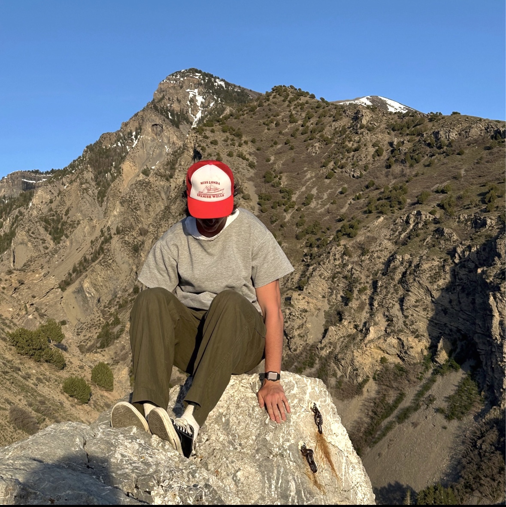

About Me

My name is Bentley Redden. I am college student from Provo, Utah studying Information Systems.
I love traveling, hikikng, climbing, skiing, and pretty much anything outdoors. I have created this page to share my love for mountaineering and the outdoors.
I don't have a ton of mountaineering experience, but I am eager to learn more before my next adventure. I am planning on summitting Mount Rainier in Washington in May and could not be more excited.
I am also planning on hiking through Peru up to Machu Picchu in late June with my family. This is only just the beginning though. Soon I hope to be able to tackle more challenging climbs like Mount Denali in Alaska or Mount Kiliminjaro in Africa.
I am really excited to see what I can accomplish in the near future with this new found love for mountaineering.
My Resume
Driven by a passion for technology, design, and business, I aspire to bridge the gap between these domains in my professional endeavors. My goal is to contribute to innovative projects that not only advance organizational objectives but also empower individuals to explore their creativity.
Education
January 2022 - Present
Information Systems
Brigham Young University
Skills
- Basics in SQL, VBA, Tableau, HTML coding
- Adobe Illustrator
- Creativity
- Leadership
- Organization
- Problem Solving
- Teamwork
Experience
-
Intern, GuideCX
May 2024 - August 2024 (Upcoming)
-
Division 1 Football Player, Brigham Young University
August 2022 - March 2024
- Illustrated exemplary leadership and teamwork skills with teammates on the field and in the weight room
- Navigated high pressure scenarios, showcasing adaptability and resilience crucial for addressing difficult problems
- Cultivated strong communication skills with coaches, teammates, and support staff
- Demonstrated exceptional time management and discipline, balancing academic success with on-field excellence
-
Assistant Warehouse Manager, Truwear
February 2022 - June 2022
- Utilized data-driven insights for inventory management and resource allocations
- Implemented effective inventory control measures and optimized warehouse workflows
- Addressed logistical challenges with innovative solutions, showcasing strong problem-solving skills
- Maintained an attention to detail in warehouse operations
-
Product Support Intern, Alleva Health
August 2021 - December 2021
- Supported product users by addressing queries and resolving issues
- Collaborated with diverse teams to relay user feedback for product improvement
- Exhibited technical skills creating personalized forms and systems for customers
- Adapted to evolving product features and updates